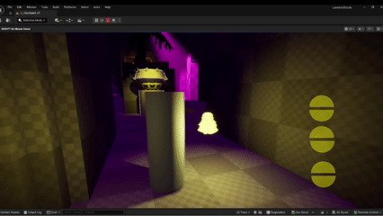
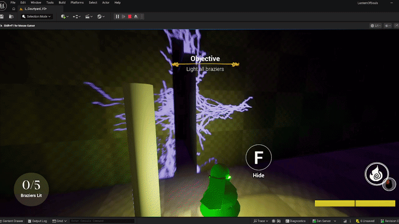
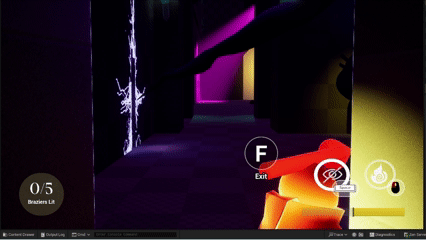

What does our camera do? #
Lantern of Souls is our current senior capstone, and I was tasked with designing the custom camera manager that fit our needs. Our camera is a dynamic 3rd person camera with our player on the third, and his soul to his side. The camera needed to be able to handle:
- Smoothly springarming against walls but not smaller objects
- switching between our dynamic camera to fixed cameras
- swtiching to first person within cracks, and allowing the player to look around smoothly
- switching to cinematics such as dramatic quick time events
Design of Springarm #

The purpose of our spring arm is to prevent the camera from clipping through walls, pushing the camera closer or towards the center. It currently uses three line traces: one from the player’s head to the camera, one from the camera to straight down, and one from the player to the right vector.
The ray shooting from the head will push the camera to the ray’s collision point, but the ray shooting right from the player will push the camera to the center of the player if it colides.
Code Breakdown

The linetrace collision for the springarm is divided into 3 parts.
-
The first linetrace is to see the location of the wall hit. The trace starts above the players head. this is done by getting the actor location and adding (15, 0, 150) to move it above the players head The trace ends 300 centimeters behind the player by subtracting (300, -90, -35) to the actor location and plugging that into the end.
The outhit location is then used to make a new camera offset. I get the actor location, subtracted that by the outhit location to get the length, I then subtract it by 12,12,12 to make the location land before the wall. (if you get the exact location the camera clips through). I unrotate the vector and that is our new desired camera offset.
-
The second linetrace shoots down from where the camera normally would be without collision, and that sees if there is a floor. If there isn’t a floor, it spring arms. This method is planned to change in the future when we implement tags.
-
The third linetrace shoots off to the right to prevent the camera from clipping to the right side of a wall. When the line collides, it brings the camera to the center of the player.
Camera States #
My camera switches on an enum between various states such as Looking, Fixed Camera, Peek left, Peek Right, Crack Look, and a death cutscene similar to fixed camera. This system has been easy for my team to follow along and adjust elements if needs be.


Looking

Lerp into normal looking is how the looking camera works if we need to interpolate into the looking camera. This happens if we need to transition from another camera mode like Fixed Camera.
Fixed


This is a camera that stays in a set position. You can choose to lerp to it or not. Typically used for interactables or cutscenes.
It takes in an arrow within interactables and sets that to the desired camera location and rotation.


Peek Left/ Peek Right

Peek left and peek right shift the camera to either side and allows the player to look around corners. This adds to the stealth a player can utilize. Q allows the player to peek to the left, and E allows the player to peek to the right. Those inputs are handled in the game controller.

Crack Look


Quick Time Event